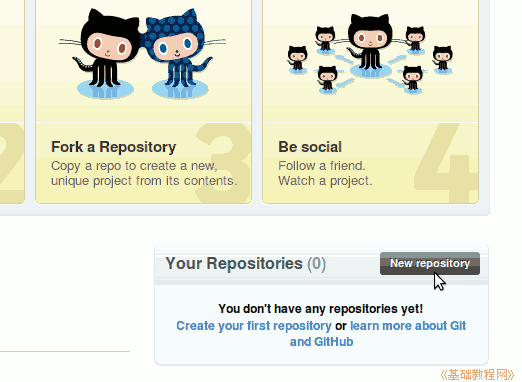
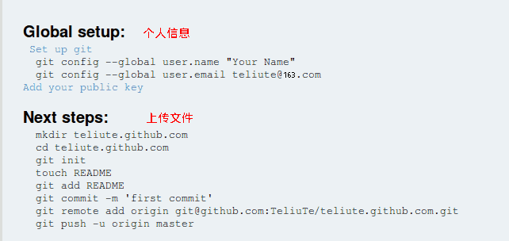
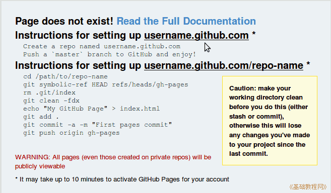

git 操作指南
作者：TeliuTe 来源：基础教程网
三、创建库和站点 返回目录 下一课接下来我们在网站上创建自己的库和站点；
1、创建库
1）登录github，点击右下角的“New repository”，新建一个库；

2）输入库的名称，我们要建一个网站，用二级域名作为库名称，也可以输入其他的名称；
3）点右下角绿色的“Create repository'”按钮，完成创建，页面给出了下一步的操作提示；

4）这样我们就在github上创建了一个域名为 teliute.github.com 的个人网站，在地址栏输入这个网址就可以访问；
5）由于是新建的，里面还没有网页，会提示找不到主页，下一课我们将学习上传自己的网页；

本节学习了创建库和站点的基础知识，如果你成功地完成了练习，请继续学习下一课内容；
本教程由86团学校TeliuTe制作|著作权所有
基础教程网：http://teliute.org/
美丽的校园……
转载和引用本站内容，请保留版权信息和本站链接。